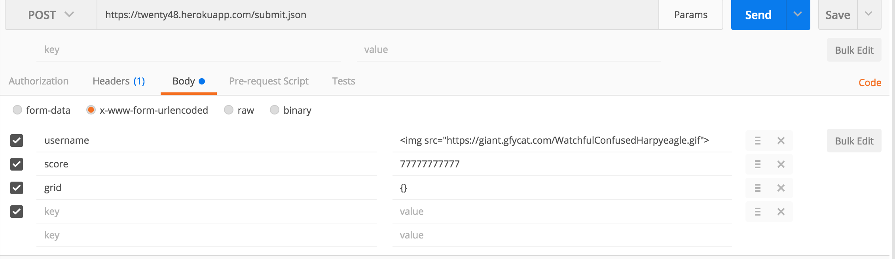
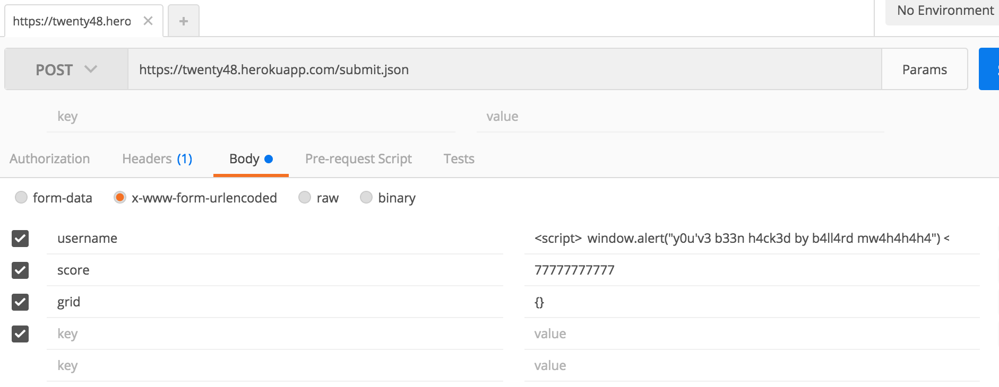
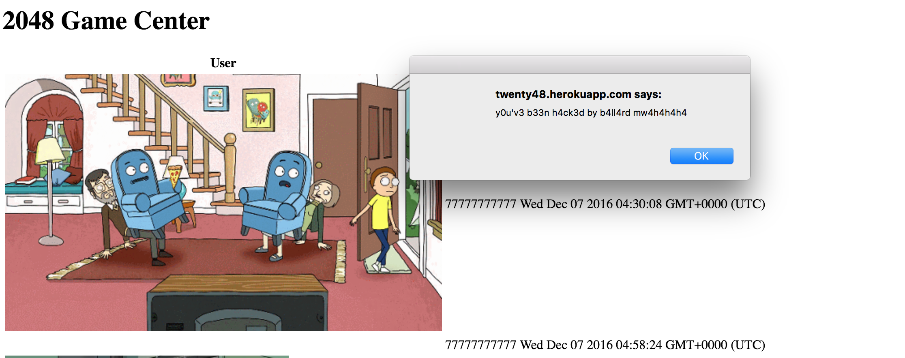
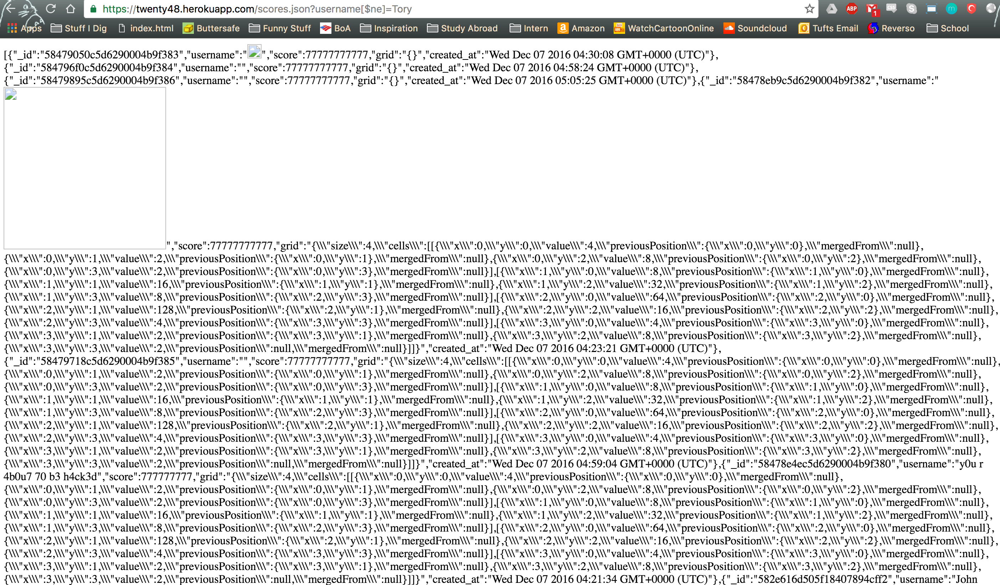

Introduction
The product I was hired to asses the security of was my Comp20 classmate's 2048 Game Center
web page located here.
This site displays the scores from playing a modified version of the 2048 game which can be found here.
The scoreboard displays all of the scores of gamers who have played the game. It also acts as an API. The web page has a GET request method with the path /scores.json?username='username'. This returns json data of all of the score information associated with that user name.
Methodology
My methodology is to try and break my classmate's website in an epic fashion. I used the a modern web browser (Google Chrome) to continually access my classmate's site and the application Postman to easily alter HTTP GET and POST parameters.
Abstract of Findings
The main issue with this web app is that the score and user name data is not secure in any way. The sites failure to validate user input allows a malicious programmer to insert all sorts of data in the database. For example, a user could insert a chunk of code so that whenever you access the site, it reroutes you to a different web site.
The site also does not prevent any data leakage. A malicious programmer with a simple command can see every piece of data in the database.
Issues Found
Invalid Data
- Issue - I was able to insert a photo into the database under the user name field.
- Location - The /submit.json POST method.
- Severity - Low to Medium. This issue is more of an annoyance and is just bad data being inserted into the database.
- Description - The issue here is that there is no server side input validation for the user name field, it merely accepts any string. So using postman I was able to send an image tag in the user name field.

- Proof - Here is the 2048 Game Center after I sent two malicious POST requests.
- Resolution - One resolution would be to implement server side input validation for the user name field of the POST body.
Here is some example code that would sanitize user input:
username = username.replace(/[^\w\s]/gi, '');
Cross Site Scripting Attacks
- Issue - I was able to send a script tag in the user name field which has an alert window pop up.
- Location - The /submit.json POST method.
- Severity - High. This issue should not be taken lightly because it allows the hacker to control the web page and what the user sees.
- Description - The issue here is that there is no server side input validation for the user name field, it merely accepts any string. So using postman I was able to send a script tag in the user name field.

- Proof - Here is the 2048 Game Center after I sent the malicious POST request.

- Resolution - One resolution would be to implement server side input validation for the user name field of the POST body.
Here some example code that would handle the above security issues by sanitizing input before it is inserted into the database.
username = username.replace(/[^\w\s]/gi, '');
Data Dump
- Issue - I was able to have see every piece of data in the database
- Location - The /scores.json GET method.
- Severity - High. This issue should not be taken lightly because it allows the hacker to see every piece of data in the database thus exposing sensitive information.
- Description - The issue here is that there is no server side sanitation for the query string parameters, it merely accepts any string. By simply altering the URL, I was able to see every piece of data.
- Proof - Here is the 2048 Game Center after I sent the malicious POST request.

- Resolution - One resolution would be to sanitize the query string parameters in the GET request.
Here is some example code that sanitizes the username query paramater:
username = request.query.username;
username = username.replace(/[^\w\s]/gi, '')
Conclusion
In conclusion this code has many vulnerabilities from a security standpoint. The most important being that there is absolutely no user input sanitation. In the future this programmer should NOT trust user input to be correct. The cost of implementing changes on the server side code are extremely cheap, if at no cost at all. With a few simple lines of code similar to those listed above, no hacker will be able to inject memes, malicious javascript, or malicious data into this database.